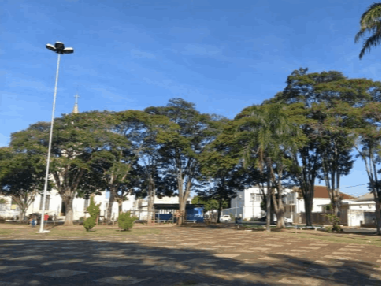

<!DOCTYPE html>
<html  >
<head>
  <!-- Site made with Mobirise Website Builder v5.6.8, https://mobirise.com -->
  <meta charset="UTF-8">
  <meta http-equiv="X-UA-Compatible" content="IE=edge">
  <meta name="generator" content="Mobirise v5.6.8, mobirise.com">
  <meta name="twitter:card" content="summary_large_image"/>
  <meta name="twitter:image:src" content="">
  <meta property="og:image" content="">
  <meta name="twitter:title" content="Olhares sobre Tupaciguara">
  <meta name="viewport" content="width=device-width, initial-scale=1, minimum-scale=1">
  <link rel="shortcut icon" href="assets/images/logo-184x167-128x116.png" type="image/x-icon">
  <meta name="description" content=""Seja forte, pois a solidão irá passar, e logo o amor e a vida irão voltar a brotar."">
  
  
  <title>Olhares sobre Tupaciguara</title>
  <link rel="stylesheet" href="assets/bootstrap/css/bootstrap.min.css">
  <link rel="stylesheet" href="assets/bootstrap/css/bootstrap-grid.min.css">
  <link rel="stylesheet" href="assets/bootstrap/css/bootstrap-reboot.min.css">
  <link rel="stylesheet" href="assets/dropdown/css/style.css">
  <link rel="stylesheet" href="assets/socicon/css/styles.css">
  <link rel="stylesheet" href="assets/theme/css/style.css">
  <link href="assets/fonts/style.css" rel="stylesheet">
  <link rel="preload" as="style" href="assets/mobirise/css/mbr-additional.css"><link rel="stylesheet" href="assets/mobirise/css/mbr-additional.css" type="text/css">
  
  
  
  
</head>
<body>
  
  <section data-bs-version="5.1" class="menu menu3 cid-sYyXJECkDt" once="menu" id="menu3-1q">
    
    <nav class="navbar navbar-dropdown navbar-fixed-top navbar-expand-lg">
        <div class="container">
            <div class="navbar-brand">
                
                <span class="navbar-caption-wrap"><a class="navbar-caption text-white text-primary display-4" href="pagina-inicial.html">Jornal Fala, Protagonista!</a></span>
            </div>
            <button class="navbar-toggler" type="button" data-toggle="collapse" data-bs-toggle="collapse" data-target="#navbarSupportedContent" data-bs-target="#navbarSupportedContent" aria-controls="navbarNavAltMarkup" aria-expanded="false" aria-label="Toggle navigation">
                <div class="hamburger">
                    <span></span>
                    <span></span>
                    <span></span>
                    <span></span>
                </div>
            </button>
            <div class="collapse navbar-collapse" id="navbarSupportedContent">
                <ul class="navbar-nav nav-dropdown nav-right" data-app-modern-menu="true"><li class="nav-item"><a class="nav-link link text-danger text-primary display-4" href="noticias.html" target="_blank">Todas as Publicações</a></li><li class="nav-item"><a class="nav-link link text-danger text-primary display-4" href="galeria.html" target="_blank">Galeria</a></li>
                    <li class="nav-item"><a class="nav-link link text-danger text-primary display-4" href="sobre-nos.html" target="_blank">Sobre nós<br></a>
                    </li><li class="nav-item"><a class="nav-link link text-danger text-primary display-4" href="contato.html" target="_blank">Contato</a></li></ul>
                <div class="icons-menu">
                    <a class="iconfont-wrapper" href="https://www.facebook.com/Jornal-Fala-Protagonista-111381991512734/" target="_blank">
                        <span class="p-2 mbr-iconfont socicon-facebook socicon"></span>
                    </a>
                    <a class="iconfont-wrapper" href="https://instagram.com/fala_protagonista?r=nametag" target="_blank">
                        <span class="p-2 mbr-iconfont socicon-instagram socicon"></span>
                    </a>
                    
                    
                </div>
                
            </div>
        </div>
    </nav>
</section>

<section data-bs-version="5.1" class="content4 cid-sYyXJF2V8A" id="content4-1r">
    
    
    <div class="container">
        <div class="row justify-content-center">
            <div class="title col-md-12 col-lg-12">
                <h3 class="mbr-section-title mbr-fonts-style align-center mb-4 display-2"><strong>Olhares sobre Tupaciguara&nbsp;</strong></h3>
                <h4 class="mbr-section-subtitle align-center mbr-fonts-style mb-4 display-5">Bruna Rodrigues, 1°c - 18-06-2021</h4>
                
            </div>
        </div>
    </div>
</section>

<section data-bs-version="5.1" class="image2 cid-sYyXJFtOZr" id="image2-1s">
    

    

    <div class="container">
        <div class="row align-items-center">
            <div class="col-12 col-lg-5">
                <div class="image-wrapper">
                    
                    <p class="mbr-description mbr-fonts-style mt-2 align-center display-7"><strong>"Seja forte, pois a solidão irá passar, e logo o amor e a vida irão voltar a brotar."</strong><br></p>
                </div>
            </div>
            <div class="col-12 col-lg">
                <div class="text-wrapper">
                    
                    <p class="mbr-text mbr-fonts-style display-7">&nbsp; &nbsp;Contando atualmente com pouco&nbsp;mais de 25 mil habitantes, Tupaciguara&nbsp;surgiu como Arraial da Abadia em 1841. Em&nbsp;1860, tornou-se a Vila Abadia do Bom&nbsp;Sucesso e, somente em 1912, virou cidade. 
<br>&nbsp; &nbsp;Mas o nome Tupaciguara só foi dado 11&nbsp;anos depois.&nbsp;Em tupi-guarani, Tupaciguara quer&nbsp;dizer “morada da Mãe de Deus”, e esse fato&nbsp;remete à matriz de Nossa Senhora da Abadia, em torno da qual a cidade nasceu. A&nbsp;igreja atual, em estilo gótico, é de 1956 e foi&nbsp;construída onde antes havia uma capela de&nbsp;palha, que depois deu lugar a uma outra, em&nbsp;estilo colonial, destruída em 1940. Assim,&nbsp;impulsionando o nascimento e o&nbsp;desenvolvimento da cidade está a imagem da&nbsp;santa. Segundo o historiador e professor 
<br>Muriel de Costa Moura, “a fé cristã ajudou&nbsp;muito a movimentar a cidade de&nbsp;Tupaciguara, porque toda ela se desenvolveu&nbsp;em torno desse centro antigo”.&nbsp;<br></p>
                </div>
            </div>
        </div>
    </div>
</section>

<section data-bs-version="5.1" class="content5 cid-sYyXJGaqjx" id="content5-1t">
    
    <div class="container-fluid">
        <div class="row justify-content-center">
            <div class="col-md-12 col-lg-10">
                
                
                <p class="mbr-text mbr-fonts-style display-7">&nbsp; &nbsp;“Nas décadas de 1940 e 1950, aos&nbsp;sábados e domingos, quase todos os&nbsp;tupaciguarenses iam para o centro da cidade,&nbsp;na rua Cel. Joaquim Mendes, onde ficavam&nbsp;o Cine Teatro Helena, o Bar Glória e o ‘vaivem’. Lá os jovens passeavam pelas calçadas&nbsp;da referida rua, bem em frente ao cinema.&nbsp;Chamava-se vai-vem porque, enquanto as&nbsp;moças vinham voltando de lá pra cá, os&nbsp;rapazes iam em sentido contrário, voltando&nbsp;em seguida, quando atingiam um imaginário&nbsp;limite. Não tinha horário para começar, nem&nbsp;alguém para tomar a iniciativa; simplesmente começava...&nbsp; &nbsp; &nbsp; &nbsp;Nessas idas e vindas, longos e&nbsp;lânguidos olhares eram trocados pelos jovens&nbsp;enamorados. Os mais atrevidos arriscavam&nbsp;uma piscadela, um discreto sinal ou, até&nbsp;mesmo, um pequeno encontro. O vai-vem&nbsp;terminava quando começava a sessão&nbsp;cinematográfica. As moças entravam&nbsp;primeiro no cinema e tratavam de reservar&nbsp;um lugar para o seu bem amado, que só&nbsp;tomava o assento quando as luzes se&nbsp;apagavam, pois ele não era bobo de arriscar 
<br>sua pele à sanha nervosa dos pais da eleita.”<br>&nbsp; &nbsp;Segundo a historiadora e professora&nbsp;Daniela Machado, Tupaciguara, ao longo&nbsp;das décadas de 1940 e 1960, vivenciou a&nbsp;vinda de muitas pessoas da zona rural para a&nbsp;cidade, gerando assim um processo de&nbsp;transformação do espaço da cidade em relação&nbsp;a elementos sociais, culturais e religiosos. Por&nbsp;volta da década de 1940, até 1945, o estilo da&nbsp;arquitetura obedecia a projetos dos&nbsp;construtores da cidade, os quais, na maioria&nbsp;das plantas, eram de “meias-águas”. Depois disso, vieram de São Paulo e de Ribeirão Preto&nbsp;construtores que traziam novos estilos. Mais&nbsp;adiante, surgiram outras mudanças... E o&nbsp;discurso sobre esse progresso é ressaltado em&nbsp;um documentário em vídeo, de 1960, no qual&nbsp;o locutor assevera: “Tupaciguara já apresenta&nbsp;prédios residenciais de linhas modernas, 
<br>mostrando o bom gosto de seus habitantes”.&nbsp;<br>&nbsp; &nbsp;As obras públicas e a abertura de novas&nbsp;ruas ocasionaram muitas demolições e novas&nbsp;construções, pois os centros das cidades se&nbsp;deslocam, e com Tupaciguara não foi&nbsp;diferente. O antigo centro que tinha por&nbsp;destaque a Rua Coronel Joaquim Mendes&nbsp;passa então para a Rua Bueno Brandão,&nbsp;evidenciando um novo cenário econômico da&nbsp;cidade. 
<br> Uma outra curiosidade sobre&nbsp;Tupaciguara é que o município foi um dos&nbsp;lugares cotados para abrigar a construção da&nbsp;nova capital federal (Brasília),&nbsp;especificamente na região do povoado do&nbsp;Brilhante. A capital federal não se tornou&nbsp;realidade aqui, mas o município ganhou&nbsp;destaque pelo turismo histórico, pelo&nbsp;comércio, pela indústria e pelo carnaval.
<br>&nbsp; &nbsp;Diante disso, ressalta-se a importância&nbsp;da preservação da memória e do patrimônio&nbsp;histórico e cultural da cidade. Isso porque o&nbsp;patrimônio histórico faz parte da identidade&nbsp;de uma sociedade, assim como suas&nbsp;características, costumes e comportamentos,&nbsp;além de ser um registro fundamental para&nbsp;futuras gerações. Assim a preservação da&nbsp;memória coletiva e individual na formação de 
<br>uma sociedade possibilita a reinterpretação&nbsp;sobre novos olhares históricos.<br> 
<br><em>Alguns dados foram compilados da internet e estão disponíveis em:
<br>https://www.achetudoeregiao.com.br/mg/tupaciguara/historia.htm. 
<br>Acesso em 27/05/2021.
<br>https://youtu.be/12TTq6dENBo. Acesso em 27/05/20</em></p>
            </div>
        </div>
    </div>
</section>

<section data-bs-version="5.1" class="footer5 cid-sYyXJGxcTd" once="footers" id="footer5-1u">

    

    

    <div class="container">
        <div class="media-container-row">
            <div class="col-md-1 col-6">
                <div class="media-wrap">
                    
                        
                    
                </div>
            </div>
            <div class="col-11 col-6">
                <p class="mbr-text align-right links mbr-fonts-style display-4">
                    <a href="noticias.html" class="text-danger">Todas as Publicações&nbsp; &nbsp; &nbsp; </a><a href="page17.html" class="text-danger">Galeria</a>&nbsp; &nbsp; &nbsp;&nbsp;<a href="pagina-inicial.html#team1-p" class="text-danger">Sobre Nós</a> &nbsp;&nbsp;&nbsp;&nbsp;
                    <a href="contato.html" class="text-danger text-primary">Contato</a>&nbsp; &nbsp; &nbsp; <a href="pagina-inicial.html#top" class="text-danger text-primary">Página Inicial</a></p>
            </div>
        </div>
        <!-- <div class="media-container-row">
            <div class="col-md-12"> -->
        <div class="footer-lower">
            <div class="media-container-row">
                <div class="col-md-12">
                    <hr>
                </div>
            </div>
            <div class="media-container-row">
                <div class="col-md-6 copyright">
                    <p class="mbr-text mbr-fonts-style display-4">
                        Escola Estadual de Ensino Médio - 2022</p>
                </div>
                <div class="col-md-6">
                    
                </div>
            </div>
            <!-- </div>
            </div> -->
        </div>

    </div>
</section><section class="display-7" style="padding: 0;align-items: center;justify-content: center;flex-wrap: wrap;    align-content: center;display: flex;position: relative;height: 4rem;"><a href="https://mobiri.se/2779947" style="flex: 1 1;height: 4rem;position: absolute;width: 100%;z-index: 1;"></a><p style="margin: 0;text-align: center;" class="display-7">Created with Mobirise &#8204;</p><a style="z-index:1" href="https://mobirise.com/website-design-software.html">Free Website Designer Software</a></section><script src="assets/bootstrap/js/bootstrap.bundle.min.js"></script>  <script src="assets/smoothscroll/smooth-scroll.js"></script>  <script src="assets/ytplayer/index.js"></script>  <script src="assets/dropdown/js/navbar-dropdown.js"></script>  <script src="assets/theme/js/script.js"></script>  
  
  
</body>
</html>